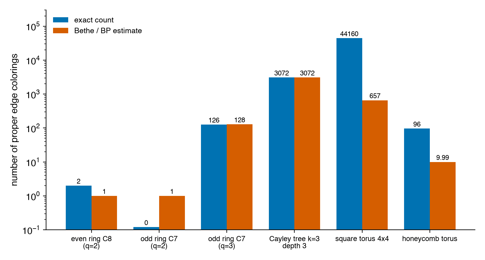
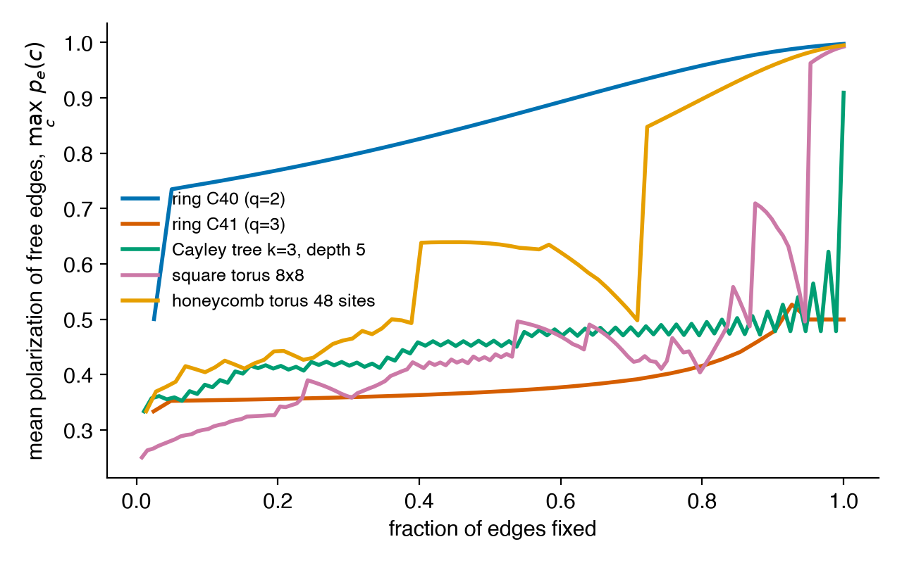
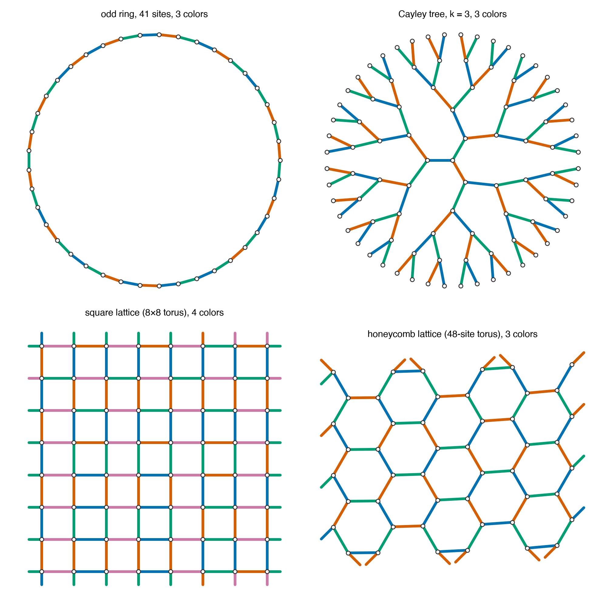

graph theory • edge coloring • dimers • Potts model • belief propagation
Edge coloring as a Potts model: dimers, trees and message passing
November 22nd, 2026
This has been a bit of a weird week. I was in Nice (FRA) at the quantum festival, and met with quite a few people, from companies, to academics, to students, researchers in National labs, investors etc etc. It's a great community, and certainly the atmosphere of the Nice's well known promenade "of the stars" were a big plus! If you are an italian, Corrado Augias passed away, and there are reasons to be nostalgic. If you're into finance, good luck, I hope you were invested in bonds. If you are an academic and your dream was to solve the Riemann hypothesis, well, you are not in luck, since a (Lean verified) proof has been released by an AI company. Left and right, this has not been a week of good news, except for us at Planckian, it's been a good week. We were awarded the EIC accelerator, which is a big injection not only of funding, but only of much needed validation. In addition, we had a nice talk by Alessandro Maserati as part of our internal "salons", seminar series on broader ideas beyond quantum or science. So, overall, we cannot complain, but I'm tired! By the way, next week I will be in Turin at Politecnico, representing Planckian at a job fair. Come say hi!
Lately I have been spending a lot of time with a classical problem in graph theory, for reasons that I will explain in a few weeks in full: in particular, edge coloring. The goal here is to color the edges of a graph so that no two edges meeting at a vertex share a color. This is quite technical combinatorics, but it can be formulated as a very simple question: What is the smallest number of colors you need, and how do you find a coloring? Interestingly, Maserati mentioned that a good proxy for when your scientific question is "interesting" is when it is easy to state, but hard to solve, e.g. the ratio between how complex it is to formulate the question vs how complex it is to solve it. Edge coloring is a perfect example of this. The reason we got to look into it is for a project at Planckian that should come out soon, where edge colorings play a central role. This post is a prelude to it. I will not talk about the application here, only about the math background. Instead I want to look at the problem the way a statistical physicist would, and show that it is a close relative of things I have worked on for years.
Also, at Los Alamos I spent a good amount of time on two topics that, it turns out, needed to use message passing. The first is artificial spin ice, where the degrees of freedom live on the edges of a lattice and the energy lives at the vertices (the ice rule) and can be mapped often to the height model, and to dimers. Dimers are involved in what follows. The second is message passing: belief propagation, the cavity method and the Bethe free energy. Both ended up in Practical Statistical Mechanics, Volume 2, which Diego Dalvit and I are currently writing, in the chapters on dimer models and on statistical models on trees. The plan of the post is: (i) define the problem and recall the classic theorems, (ii) show that a coloring is a stack of dimer coverings, (iii) write a Hamiltonian, a Potts model on the line graph, whose ground states are the colorings, (iv) solve it with belief propagation on a loop, a tree, the square and the honeycomb lattice, and see what the method gets right and what it misses.
Prerequisites to read this post: what a graph is, the Ising/Potts model, and the idea of a partition function. Belief propagation is derived from scratch, but it's easier if you already know about it.
- 1. The edge coloring problem
- 2. A coloring is a stack of dimer coverings
- 3. A Potts Hamiltonian on the line graph
- 4. Message passing for edge colorings
- 5. The paramagnetic fixed point and the Bethe count
- 6. Cayley trees of degree $k$ are $k$-colorable
- 7. Finding a coloring: BP-guided decimation
- 8. Los Alamos, Volume 2, and the online material
1. The edge coloring problem
Let me start with some formal definitions. Let $G=(V,E)$ be a finite graph and let $\Delta(G)$ its maximum degree. A proper $q$-edge-coloring is a map $\sigma:E\to\{1,\dots,q\}$ such that two edges sharing a vertex get different colors. The smallest such $q$ is an important graph invariant called the chromatic index $\chi'(G)$. In practice, take $q$ colors, and use them to color lines, and another color for the nodes. If at any node you have two lines of the same color, you have a conflict. The goal is to find a coloring with no conflicts, and to do it with as few colors as possible.
A lower bound is immediate: the $\Delta$ edges at a vertex of maximum degree must all be different, so $\chi'\ge\Delta$, you cannot have less colors than the maximum degree. The surprise is how little room is left above it. Historically, quite a lot of effort went into proving the following theorems, which are now standard in graph theory textbooks. For instance:
- Vizing (1964). For every simple graph, $\Delta\le\chi'\le\Delta+1$. Graphs are either "class 1" ($\chi'=\Delta$) or "class 2" ($\chi'=\Delta+1$).
- König (1916). If $G$ is bipartite, $\chi'=\Delta$. Always class 1.
- Holyer (1981). Deciding whether a general cubic graph is class 1 is NP-complete.
The simplest class-2 graph is an odd ring: each vertex has degree 2, but two alternating colors cannot close around an odd cycle, so it needs 3. The famous Petersen graph is another. Keep the odd ring in mind: it is a global parity obstruction, invisible to any local inspection of the graph, and it will come back when we look at what message passing can and cannot see.
2. A coloring is a stack of dimer coverings
One can map the edge coloring problem to a (multi-)dimerization problem, as follows. Fix a color $c$ and look at the set of edges that carry it. Since no two of them share a vertex, it is a matching. In the language of statistical mechanics, a matching is a configuration of hard-core dimers on the edges, and the vertices it misses are monomers. So a proper $q$-edge-coloring is the same thing as a partition of the edge set into $q$ monomer–dimer configurations.
2.1 Regular bipartite graphs: $k$ perfect dimer coverings
Let me pick a simple example. Let $G$ be bipartite and $k$-regular, $V=V_A\sqcup V_B$. Counting edge endpoints on each side, $k|V_A|=|E|=k|V_B|$. For any $S\subseteq V_A$, the $k|S|$ edges leaving $S$ land in its neighborhood $N(S)$, each vertex of which absorbs at most $k$ of them, so $|S|\le|N(S)|$. This is Hall's condition, so $G$ has a perfect matching, a close-packed dimer covering $M_1$. Removing it leaves a $(k-1)$-regular bipartite graph, and iterating,
$$E=M_1\sqcup M_2\sqcup\cdots\sqcup M_k,\qquad M_c\ \text{a dimer covering of }G.$$
This is König's theorem for regular graphs, and it says that a $k$-edge-coloring of a $k$-regular bipartite graph is an ordered list of $k$ close-packed dimer coverings that do not overlap. In matrix language, if $C$ is the biadjacency matrix (rows $V_A$, columns $V_B$), then $C=P_1+\cdots+P_k$ with $P_c$ permutation matrices, which is the integer version of the Birkhoff–von Neumann theorem. Three classical theorems, yet this is only one fact.
The simplest example is $K_{k,k}$, the complete bipartite graph. Label the rows of a $k\times k$ array by $V_A$, the columns by $V_B$, and write in cell $(a,b)$ the color of edge $(a,b)$. The coloring is proper if and only if no color repeats in a row or a column. So the $k$-edge-colorings of $K_{k,k}$ are exactly the Latin squares of order $k$. There are $L(3)=12$, $L(4)=576$, $L(5)=161280$, and so on.
2.2 Counting: permanents, Kasteleyn, and why we never need to count
An important connection is that the number of dimer coverings of a bipartite graph is the permanent of its biadjacency matrix. The permanent is like the determinant, but without the alternating signs. I have talked some time ago about it, in a post in which I mentioned Caianello's work. I have talked about dimer models already this year, here. It is a very well known fact that the number of dimer coverings of a bipartite graph is the permanent of $C$, which is #P-hard to compute in general. But finding one is easy, with augmenting paths or Hopcroft–Karp. And for planar graphs even counting collapses: Kasteleyn's orientation turns the permanent into a Pfaffian, $N_{\rm dimers}=|\mathrm{Pf}\,K|$ with $(\mathrm{Pf}\,K)^2=\det K$, which is how the square-lattice dimer entropy $G_{\rm Cat}/\pi\approx0.2916$ per site is obtained. This is the material of the dimer chapter of Volume 2.
An important fact is however that for bipartite graphs a coloring can be built in polynomial time by recursion. Pad $G$ to a $\Delta$-regular bipartite multigraph. If $\Delta$ is even, color the edges of an Euler circuit alternately, which splits it into two $\Delta/2$-regular halves. If $\Delta$ is odd, peel off one perfect matching first. After $O(\log\Delta)$ levels, $\Delta$ matchings come out. So existence and construction are settled. What a statistical physicist can still ask is: how many colorings are there, what does a typical one look like, and is there a local, distributed algorithm that finds one, also on graphs where the combinatorial recipe does not apply?
3. A Potts Hamiltonian on the line graph
Now, let us turn the edge coloring problem into a statistical mechanics problem. The idea is to write a Hamiltonian whose ground states are the proper colorings, and then use the machinery of statistical mechanics to study it. This is a standard trick in combinatorial optimization. Give every edge a $q$-state Potts variable $\sigma_e\in\{1,\dots,q\}$ and charge one unit of energy for every pair of edges that meet at a vertex and have the same color:
$$H(\sigma)=\sum_{v\in V}\ \sum_{\substack{e\lt e'\\ e,e'\ni v}}\delta_{\sigma_e,\sigma_{e'}}=\sum_{v\in V}\sum_{c=1}^{q}\frac{n_v^c\,(n_v^c-1)}{2},\qquad n_v^c=\#\{e\ni v:\sigma_e=c\}.$$
$H\ge0$, and $H=0$ exactly on proper colorings. So the zero-temperature partition function counts them:
$$Z(\beta)=\sum_\sigma e^{-\beta H(\sigma)}\ \xrightarrow{\ \beta\to\infty\ }\ \#\{\text{proper $q$-edge-colorings of }G\}.$$
3.1 The line graph
Two edges interact if and only if they share a vertex, which is the definition of adjacency in the line graph $\mathcal L(G)$. So $H$ is the antiferromagnetic $q$-state Potts model on $\mathcal L(G)$, and an edge coloring of $G$ is a vertex coloring of $\mathcal L(G)$. The line graph has a neat algebraic form. If $B$ is the $|V|\times|E|$ incidence matrix of $G$, then
$$B^{\mathsf T}B=2I+A_{\mathcal L},$$
because every edge has two endpoints and two distinct edges share at most one vertex. This identity is the backbone of the graph-theoretic treatment of spin ice in Volume 2. With the color indicators $x^c_e=\delta_{\sigma_e,c}$ one has $(Bx^c)_v=n_v^c$, and the Hamiltonian becomes a quadratic form,
$$H=\frac12\sum_{c}\,x^{c\,\mathsf T}A_{\mathcal L}\,x^c=\frac12\sum_c\Big(\|Bx^c\|^2-2\|x^c\|^2\Big)=\frac12\sum_{v,c}(n_v^c)^2-|E|.$$
For a $k$-regular graph with $q=k$ colors the ground states have $n_v^c=1$ everywhere, that is, $Bx^c=\mathbf 1$ for every color: each color is a perfect dimer covering, and the $q$ dimer models are coupled only through the constraint $\sum_c x^c_e=1$. So the Hamiltonian makes the dimer picture of Section 2 explicit.
4. Message passing for edge colorings
$H$ is a sum of vertex terms, so the Boltzmann weight factorizes over vertices,
$$P(\sigma)=\frac1Z\prod_{v\in V}\psi_v(\sigma_{\partial v}),\qquad \psi_v(\sigma_{\partial v})=\exp\Big[-\beta\sum_{\{e,e'\}\ni v,\ e\neq e'}\delta_{\sigma_e,\sigma_{e'}}\Big],$$
where $\sigma_{\partial v}$ are the colors of the edges at $v$. At $\beta=\infty$, $\psi_v$ is simply the indicator that they are all different. In factor-graph language the variables are the edges and the factors are the vertices. Each variable sits in exactly two factors, its endpoints, so the factor graph is $G$ itself, and its cycles are the cycles of $G$. On a tree, belief propagation is therefore exact.
4.1 The update rule
Since every edge variable touches only two factors, the variable-to-factor message on edge $(u,v)$ is just the factor-to-variable message coming from the other endpoint. We need a single family of messages, one per directed edge: $m_{u\to v}(c)$, the probability that edge $(u,v)$ has color $c$ in the graph where the vertex $v$ has been removed (the cavity graph). The belief-propagation equations are
$$m_{u\to v}(c)\ \propto\ \sum_{\{\sigma_w\}_{w\in\partial u\setminus v}}\psi_u\big(c,\{\sigma_w\}\big)\prod_{w\in\partial u\setminus v}m_{w\to u}(\sigma_w).$$
At $\beta=\infty$ the sum runs over the assignments of distinct colors, all different from $c$, to the other edges at $u$. For a vertex of degree $d$ it has at most $q^{d-1}$ terms, which is tiny for lattices. The edge marginals and the Bethe free energy follow:
$$p_{uv}(c)\propto m_{u\to v}(c)\,m_{v\to u}(c),\qquad \ln Z_{\rm Bethe}=\sum_{v}\ln Z_v-\sum_{(u,v)}\ln Z_{uv},$$
$$Z_v=\sum_{\sigma_{\partial v}}\psi_v(\sigma_{\partial v})\prod_{w\in\partial v}m_{w\to v}(\sigma_{vw}),\qquad Z_{uv}=\sum_c m_{u\to v}(c)\,m_{v\to u}(c).$$
This is the standard Bethe construction of the tree chapter of Volume 2, specialized to Potts variables living on edges.
5. The paramagnetic fixed point and the Bethe count
The Hamiltonian is invariant under any permutation of the $q$ colors. A consequence is that the uniform message $m_{u\to v}(c)=1/q$ is always a fixed point, on any graph and at any $\beta$. Call it the paramagnetic fixed point. At $\beta=\infty$ it gives $Z_v=(q)_{d_v}/q^{d_v}$, with $(q)_d=q(q-1)\cdots(q-d+1)$ the falling factorial, and $Z_{uv}=1/q$. Using $\sum_v d_v=2|E|$,
$$\boxed{\ Z_{\rm Bethe}=\frac{\prod_{v}(q)_{d_v}}{q^{|E|}}\ }$$
The interpretation is transparent. There are $q^{|E|}$ colorings in total. A vertex of degree $d$ sees all-different colors with probability $(q)_d/q^d$, and Bethe pretends that the vertices are independent. For a $k$-regular graph with $q=k$ and $N$ vertices this reads
$$Z_{\rm Bethe}=\Big(\frac{k!}{k^{k/2}}\Big)^{N}.$$
For $k$-regular bipartite graphs this is exactly Schrijver's lower bound on the number of $k$-edge-colorings, $(k!^2/k^k)^{N/2}$. For $K_{k,k}$ it is the classical lower bound for Latin squares, $L(k)\ge (k!)^{2k}/k^{k^2}$, which follows from the van der Waerden permanent inequality and is tight at the level of $\ln L(k)\simeq k^2\ln k$. Bethe and the permanent inequalities know about each other, which is a recurring theme in the dimer literature.
5.1 Four test cases
I computed the exact number of colorings by brute force on small instances of the four geometries of this post, and compared with the Bethe value from BP. BP was run from random initial messages, and in every case it converged to the paramagnetic fixed point.
| graph | $q$ | exact | Bethe | comment |
|---|---|---|---|---|
| even ring $C_8$ | 2 | 2 | 1 | misses the two global ground states |
| odd ring $C_7$ | 2 | 0 | 1 | blind to the parity obstruction |
| odd ring $C_7$ | 3 | 126 | 128 | misses the loop term $-(q-1)$ |
| Cayley tree, $k=3$, depth 3 | 3 | 3072 | 3072 | exact, as it must be |
| square lattice, $4\times4$ torus | 4 | 44160 | 657 | short loops: underestimate |
| honeycomb, 16-site torus | 3 | 96 | 9.99 | short loops: underestimate |

5.2 The ring: where the loop correction lives
The ring is solvable and shows exactly what Bethe misses. The line graph of $C_n$ is $C_n$ itself, and the number of proper $q$-colorings of a cycle is the chromatic polynomial
$$Z_{C_n}=\mathrm{Tr}\,T^n=(q-1)^n+(-1)^n(q-1),\qquad T=J-I,$$
where $T$ is the $q\times q$ transfer matrix with eigenvalues $q-1$ (once) and $-1$ ($q-1$ times). The Bethe value is $(q)_2^n/q^n=(q-1)^n$, which is the leading eigenvalue alone. The second term is the contribution of the one loop of the graph. For $q=2$ it is $\pm1$, and it is precisely what distinguishes the even ring (2 colorings) from the odd ring (none). So the parity obstruction of Section 1 is literally a loop correction to belief propagation. This is the kind of term the loop calculus of Chertkov and Chernyak, also developed at Los Alamos, was designed to resum. Actually, I worked on this problem myself, deriving loop calculus from the point of view of the BKAR formula here (a technical paper).
6. Cayley trees of degree $k$ are $k$-colorable
Take the Cayley tree $T_k$ (the Bethe lattice, truncated at depth $L$): every internal vertex has $k$ neighbors, and the leaves have one. A tree has no cycles, so it is bipartite and König gives $\chi'(T_k)=k$. Here the proof is a greedy construction that you can do by hand:
- give the $k$ edges at the root the colors $1,\dots,k$;
- a vertex at depth $\ell\ge1$ has one edge going up, of some color $c$, and $k-1$ edges going down. Give the downward edges the $k-1$ colors different from $c$.
Nothing can go wrong later, because there is no cycle that could force a conflict further down. This is the tree version of the statement that cycles are the only obstruction. The construction also counts the colorings. The root has $k!$ choices and every other internal vertex $(k-1)!$, so
$$Z_{T_k}=k!\,\big((k-1)!\big)^{n_{\rm int}},$$
where $n_{\rm int}$ is the number of non-root internal vertices. For $k=3$ and depth 3, $n_{\rm int}=9$ and $Z=6\cdot2^9=3072$, which is the number in the table. The Bethe formula gives the same number: $\prod_v(q)_{d_v}/q^{|E|}=6^{10}\,3^{12}/3^{21}=3072$. On a tree the paramagnetic fixed point is the exact answer, and the "independent vertices" picture is not an approximation but a theorem.
The dimer picture on the tree is a bit different from the planar case. A tree has at most one perfect matching, and since the leaves have degree one, the color classes of a truncated tree cannot all be dimer coverings: they carry monomers, mostly on the boundary. There are no faces, so the Kasteleyn sign problem is empty. Instead, monomer–dimer configurations are counted exactly by the leaf-to-root recursion, which is belief propagation again.
7. Finding a coloring: BP-guided decimation
Counting is one thing. To find a coloring, the color symmetry has to be broken, and the paramagnetic fixed point by itself is useless for that, since every marginal is $1/q$. The standard trick from the cavity-method literature is decimation:
- add a tiny random field ($10^{-3}$) on every edge to break the color symmetry;
- run BP (damping $0.5$, up to 80 sweeps) and compute the edge marginals $p_e(c)$;
- take the free edges with the most polarized marginal, $\max_c p_e(c)$, and fix each to its most likely color, with a hard field;
- repeat until every edge is fixed, then count the conflicts $H(\sigma)$.
I used the soft Potts factor at $\beta=3$ rather than the hard constraint. Hard constraints make BP brittle under decimation, since a single bad choice zeroes messages. I fixed $2\%$ of the edges per step on the ring and the tree, and $0.5\%$ on the two lattices.
| graph | $N$ | $q$ | solved (conflicts $=0$) |
|---|---|---|---|
| even ring | 40 | 2 | 5 / 5 |
| odd ring | 41 | 3 | 5 / 5 |
| Cayley tree, $k=3$, depth 5 | 94 | 3 | 5 / 5 |
| square lattice, $8\times8$ torus | 64 | 4 | 5 / 5 |
| honeycomb, torus | 48 | 3 | 5 / 5 |
All runs found a proper coloring. The decimation rate matters on the lattices. In a few exploratory runs on a $10\times10$ square torus, fixing $2\%$ of the edges per step typically left 2 to 7 conflicting pairs, while fixing $0.5\%$ per step solved every run. This is the usual picture: decimating too fast commits to choices before the messages have had time to propagate the consequences around the short loops.


For bipartite graphs this is, of course, not needed for existence: the Euler-splitting recursion of Section 2 already produces a coloring in polynomial time. Message passing becomes interesting for three other reasons: it gives the entropy, it samples typical rather than special colorings, and it is a local, distributed algorithm that does not care whether the graph is bipartite. For class-2 detection in general graphs, which is NP-complete by Holyer's theorem, it is a heuristic, and the ring tells us exactly what it misses: loops.
8. Los Alamos, Volume 2, and the online material
Most of the ingredients of this post come from Practical Statistical Mechanics, Volume 2, written with Diego Dalvit while we were at Los Alamos. The chapter on dimer models and height models has the perfect matchings, the Kasteleyn orientation and the Pfaffian count, which were topics I worked on together with Cristiano Nisoli. The chapter on statistical models on trees has belief propagation, the cavity method and the Bethe free energy. And the graph-theoretic treatment of spin ice has the line graph and the identity $B^{\mathsf T}B=2I+A_{\mathcal L}$. Edge coloring sits right at the intersection: Potts spins on edges, a vertex rule as in spin ice, dimers as color classes, and message passing to solve it.
What I have written here is more than fits in the printed volume, and the next round of material, connected to the forthcoming Planckian work, will be even less likely to fit. So a good part of it will live online, as supplementary material to the book, and this post is meant as the readable entry point.